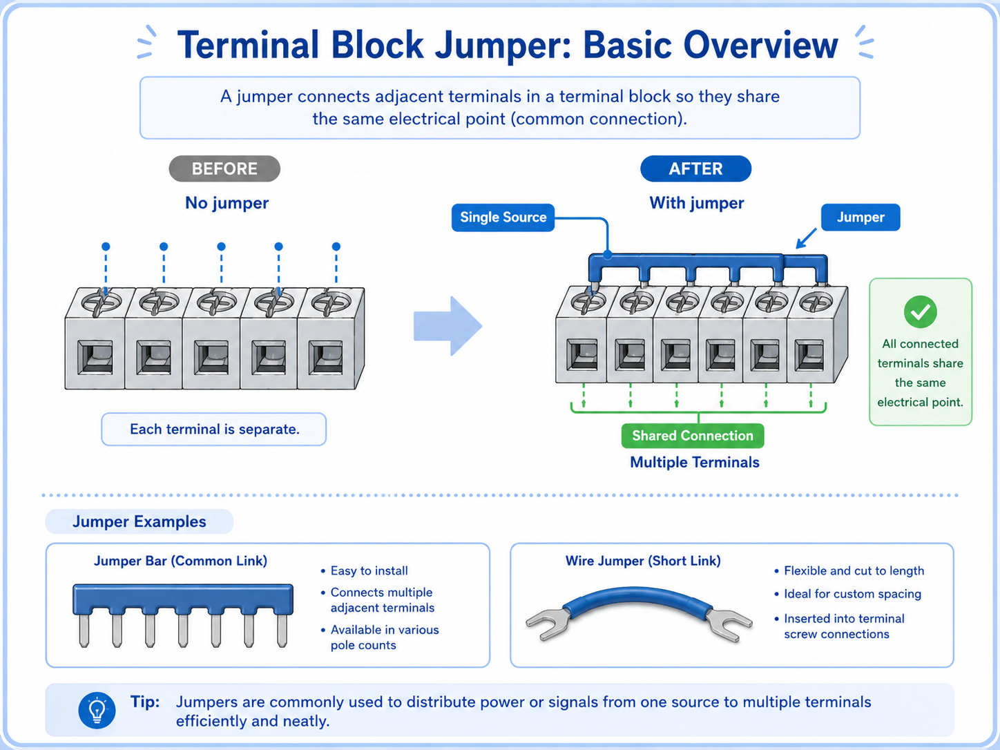
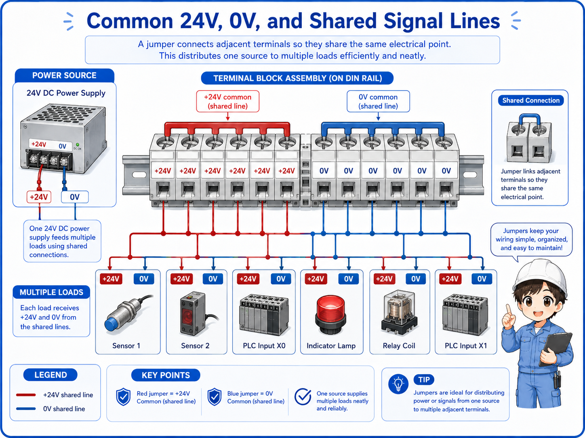
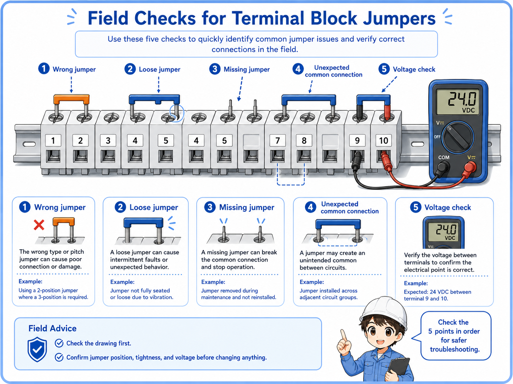

What is a terminal block jumper?
A jumper connects neighboring terminals so they share the same electrical connection.
In a control panel, some circuits need the same power, 0V, or common signal. Instead of wiring each terminal separately from the same source, a jumper can connect multiple terminals together.
You may see a metal jumper bar inserted into terminal blocks, or a short piece of wire used to bridge terminals. Both methods can create a shared connection, but the correct method depends on the terminal type, rated current, drawing, and panel design.

The simple way to think about it
A jumper is a controlled bridge. It intentionally connects terminals that must be the same electrical point, such as several 24V terminals or several 0V terminals.
Why jumpers are used in control panels
Jumpers reduce repeated wiring and make common distribution easier to organize.
When several devices need the same power or common line, a terminal block jumper can make the wiring cleaner. For example, several sensors may need 24V power, or several input commons may need to share 0V.
Power distribution
One 24V supply point can be shared to multiple terminals when the design allows it.
0V common line
Several 0V terminals can be connected together as a common reference.
Cleaner wiring
Using a proper jumper can reduce unnecessary duplicated wires.
Easier inspection
Common points are easier to identify when the jumper layout matches the drawing.

A jumper looks small, but it may connect many circuits. Before touching it, always ask: what terminals become common because of this bridge?

So one loose or wrong jumper can affect several devices at the same time.
Jumper bar vs short wire jumper
A jumper bar is a dedicated accessory, while a wire jumper is a short wire used as a bridge.
A jumper bar is designed for compatible terminal blocks. It usually fits into a specific jumper slot and provides a clean common connection. A short wire jumper can also connect terminals, but it must be installed correctly and must match the circuit requirements.
| Type | Typical use | Be careful about |
|---|---|---|
| Jumper bar | Sharing a common line across compatible terminal blocks. | Compatibility, rated current, insertion position, and required end treatment. |
| Short wire jumper | Connecting two or several terminals with a short piece of wire. | Wire size, ferrule/crimping, terminal tightening, labeling, and route clarity. |
| External common wiring | Distributing power or common lines through separate wiring or a distribution block. | Panel design, protection, wire capacity, and whether it matches the drawing. |
Do not choose only by convenience
A jumper must match the terminal block, current rating, wiring method, and panel drawing. A convenient bridge can become a fault point if it is not suitable for the circuit.
Common 24V, 0V, and shared signal lines
Many jumpers are used to distribute common power or common reference points.
In a 24V DC control panel, jumpers are often used around 24V supply terminals and 0V common terminals. They may also appear in input commons, relay commons, lamp commons, and other shared signal points.

1. One source
A 24V power supply, 0V line, or common signal starts from one point.
2. Jumper bridge
The jumper connects multiple terminals so they become the same electrical point.
3. Multiple loads
Several sensors, inputs, lamps, or relay circuits can use the shared line.
How to read jumpers on drawings and panels
A jumper should be confirmed by the drawing, terminal numbers, and actual voltage.
On a drawing, jumpers may appear as short connection lines between terminals, common bars, or repeated common symbols. In the real panel, they may appear as a metal jumper bar or short wires between terminals.
When you see several devices failing together, do not only check each device. Check whether they share the same jumper, same 24V line, same 0V line, or same common terminal.
Good troubleshooting question
“Do these failed devices share the same common jumper?” This one question can help narrow down power and common-line problems quickly.
Never move a jumper by appearance alone
A jumper may look like a simple bridge, but it can connect several circuits. Removing or moving it without checking the drawing can create a new fault or short circuit.
Field checks for terminal block jumpers
Check whether the jumper is correct, tight, present, and electrically doing what the drawing says.
Jumper-related problems can be easy to miss. A terminal may look connected, but the jumper may be loose, in the wrong position, missing, damaged, or not rated for the circuit. A calm check order helps prevent guessing.

1. Match the drawing
Confirm which terminal numbers should be connected together and which should remain separate.
2. Check tightness
Look for loose jumper bars, loose screws, poor wire insertion, or damaged short jumpers.
3. Check missing or wrong jumpers
A missing jumper can stop several circuits. A wrong jumper can connect circuits that should not be common.
4. Measure voltage
Confirm that the expected 24V, 0V, or signal common is actually present at each terminal.
Common mistakes to avoid
Many jumper problems come from assuming that a small bridge is harmless.
- Removing a jumper without checking which circuits share it.
- Adding a jumper because the terminals are next to each other.
- Using a short wire jumper without confirming wire size and tightening condition.
- Forgetting that several devices may fail together when a common jumper is loose.
- Checking only the device side and not the shared common terminal.
- Leaving jumper changes undocumented for the next worker.
Simple field mindset
A jumper is small, but its effect is wide. Always think in groups: what terminals become the same electrical point because this jumper exists?